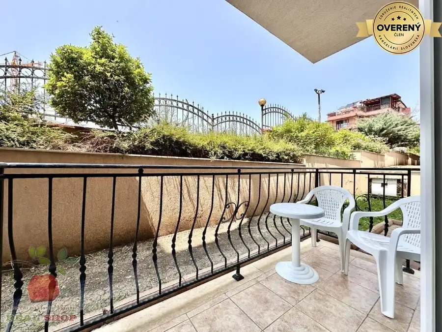
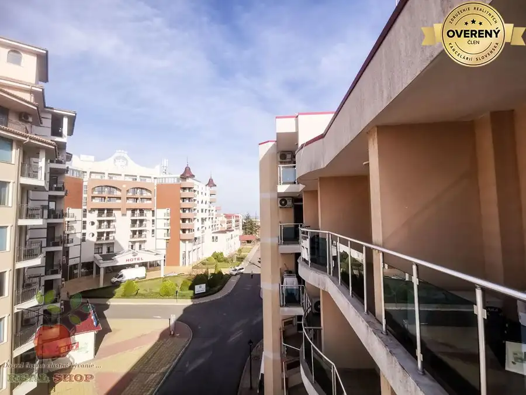
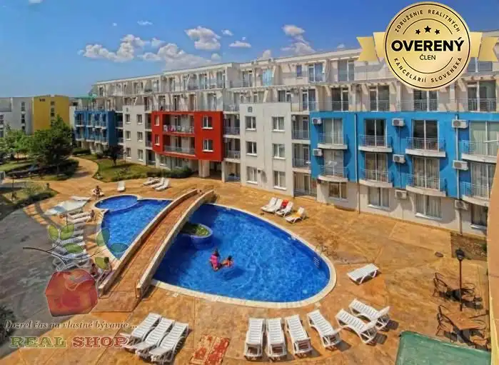

Predaj · Chaty a chalupy
Predám chatu v obci Ulany nad žitavou
38 000 €
O nehnuteľnosti
Predám chatku ktorá sa nachádza v obci Úľany nad Žitavou,v tichej časti pri hrádzi.Rozloha pozemku je ca 400m/2
Je to asi 6km od TK Podhájska a 4km od Šurian.
V okolí je niekoľko rybníkov na rybolov a aj potok/riečka/ Žitava.
Chatka je podpivničená,s obývateľným podkrovím.
Je vybavená krbovou pecou,ktorá ju úplne vykúri aj v zime.
Rozvod elektriky je rozvádzačom,ktroý je možný pripojiť na fotovoltaiku alebo elektrocentrálu.
Pripojenie na ZSE je asi 300m /na el.stlp/
Na pozemku sa nachádza aj studna,vonkajší krb a ohnisko.
Na pozemku sú ovocné stromy ako marhule,broskyne.jablone,hrušky,hrozno,ríbezle a egreše.
Bližšie informácie t.č. kontakt Zsolt Lebó
Parametre
| Dátum zverejnenia | 11. 5. 2024 |
|---|
Ďalšie ponuky
Celá ponukaMohlo by Vás zaujímať

Apartmány10 56 900 €Štúdio,Svatý Vlas,Bulharsko Nesebyr 1-izbový45 m² ? Lokalita: Sveti Vlas ?️ Vzdialenosť od pláže: Len 450 metrov ?️ Hlavné vlastnosti garsónky: Nachádza sa na prízemí – ľahký prístup Výhľad do dvora…
Apartmány10 61 000 €Štúdio,Sunny Beach,Bulharsko Nesebyr 47 m²5. podlažie Zrekonštruované štúdio na predaj | Komplex Esperanto, Slnečné pobrežie – 2. línia od pláže. Ponúkam toto zrekonštruované a kompletne zariadené…
Apartmány10 45 800 €Štúdio,Sunny Beach,Bulharsko Nesebyr 28 m²2. podlažie Podrobnosti o nehnuteľnosti Štúdio pripravené na nasťahovanie alebo na prenájom, ktoré sa nachádza na 2. poschodí v komplexe Sunny Day 3, len 800…